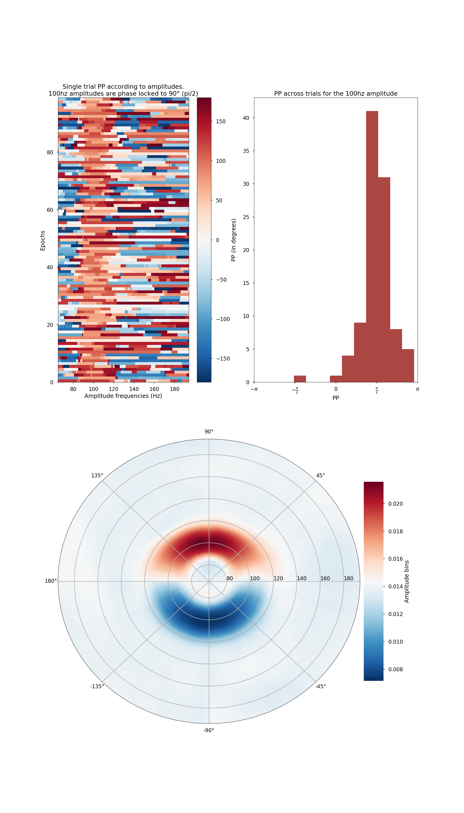

Note
Click here to download the full example code
Find the preferred phase (PP)¶
First, the amplitude is binned according to phase slices (360 degrees/nbins). Then, the PP is defined as the phase where the amplitude is maximum. We finally use the polar representation to display the preferred phase at different amplitudes.
import numpy as np
import matplotlib.pyplot as plt
from tensorpac import pac_signals_wavelet, Pac
plt.style.use('seaborn-poster')
# Generate 100 datasets with a 6<->100hz coupling :
sf = 1024.
ntrials = 100
data, time = pac_signals_wavelet(fpha=6, famp=100, ntrials=ntrials, sf=sf,
noise=.7, npts=2000, pp=np.pi/2)
# Define a Pac object. Here, we are not going to use the idpac variable :
p = Pac(fpha=[5, 7], famp=(60, 200, 10, 1))
# Extract the phase and the amplitude :
pha = p.filter(sf, data, axis=1, ftype='phase')
amp = p.filter(sf, data, axis=1, ftype='amplitude')
# Now, compute the PP :
ambin, pp, vecbin = p.pp(pha, amp, axis=2, nbins=72)
# Reshape the PP to be (ntrials, namp) :
pp = np.squeeze(pp).T
# Reshape the amplitude to be (nbins, namp, ntrials) and take the mean across
# datasets :
ambin = np.squeeze(ambin).mean(-1)
plt.figure(figsize=(20, 35))
# Plot the prefered phase :
plt.subplot(221)
plt.pcolormesh(p.yvec, np.arange(100), np.rad2deg(pp), cmap='Spectral_r')
cb = plt.colorbar()
plt.clim(vmin=-180., vmax=180.)
plt.axis('tight')
plt.xlabel('Amplitude center frequency (Hz)')
plt.ylabel('Ndatasets')
plt.title("PP for each dataset and for several amplitudes.\n100hz amplitudes"
" are phase locked to 90° (<=> pi/2)")
cb.set_label('PP (in degrees)')
# Then, we show the histogram corresponding to an 100hz amplitude :
idx100 = np.abs(p.yvec - 100.).argmin()
plt.subplot(222)
h = plt.hist(pp[:, idx100], color='#ab4642')
plt.xlim((-np.pi, np.pi))
plt.xlabel('PP')
plt.title('PP across trials for the 100hz amplitude')
plt.xticks([-np.pi, -np.pi / 2, 0, np.pi / 2, np.pi])
plt.gca().set_xticklabels([r"$-\pi$", r"$-\frac{\pi}{2}$", "$0$",
r"$\frac{\pi}{2}$", r"$\pi$"])
p.polar(ambin.T, vecbin, p.yvec, cmap='Spectral_r', interp=.1, subplot=212,
cblabel='Amplitude bins')
# plt.savefig('pp.png', dpi=300, bbox_inches='tight')
p.show()
Total running time of the script: ( 0 minutes 6.388 seconds)